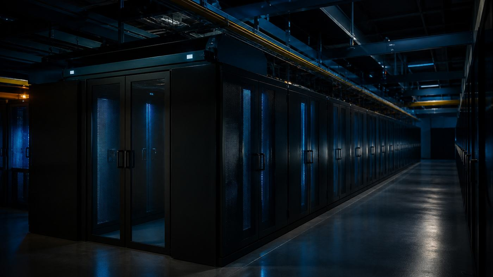

// Facilities
What Uptime Institute Tiers actually say
The four Tier definitions, the three Certification awards, and why a Tier claim in a sales deck is usually not one.

Almost everything the industry says about Tiers is either wrong or is a claim nobody has checked. The classification itself is short, specific and public. The confusion comes from three places: people quoting availability percentages that were removed from the standard in 2009, people conflating a design review with a certified building, and people using the word "Tier" for something that has nothing to do with Uptime Institute at all.
The classification lives in two documents: Tier Standard: Topology, which covers the configuration of power and cooling, and Tier Standard: Operational Sustainability, which covers how the site is run. Certification is done by Uptime Institute and only by Uptime Institute.
The four Tiers
| Tier | Name | Capacity components | Distribution paths |
|---|---|---|---|
| I | Basic Capacity | Non-redundant | One |
| II | Redundant Capacity Components | Redundant | One |
| III | Concurrently Maintainable | Redundant | Multiple, one active |
| IV | Fault Tolerant | Redundant | Multiple, independent, physically isolated, simultaneously active |
Tier I is dedicated space for IT, a UPS, dedicated cooling that runs outside office hours, and an engine generator. Any maintenance or repair on the critical path means shutting the site down, and any capacity or distribution failure hits IT.
Tier II adds redundant capacity components — extra UPS modules, chillers, pumps, generators, energy storage. Still one distribution path, so maintenance on that path still means a shutdown.
Tier III adds redundant distribution paths. The defining property is that each and every capacity component and each and every element of the distribution paths can be removed from service on a planned basis without impacting the IT environment. That is what concurrently maintainable means, and it is a statement about planned work.
Tier IV adds fault tolerance: an individual equipment failure or distribution path interruption is stopped short of IT operations, with no human intervention. It requires multiple independent, physically isolated systems, compartmentalized so that one event cannot affect both. It requires continuous cooling. And after any single infrastructure failure, N capacity must remain serving the critical environment.
Note what that last requirement does. Tier IV is not a component count, it is a post-failure condition. Which leads to the most useful thing Uptime says about their own standard.
What the standard does not say
Uptime is explicit that Tier Certification is not a checklist or a cookbook. It is performance-based. You can, they say, achieve Tier IV with N+1 components if the configuration is right. Equally, you can install 2N of everything and miss, because of where you put it or how it is controlled.
A few specific things people believe that are not in Tier Standard: Topology:
- Utility feeds do not determine Tier. Uptime's position is that the engine generator plant is the reliable source, because utility power is subject to unscheduled interruption. Two utility services do not buy you a Tier level.
- Site location is not part of Topology. Flood plain, seismic zone, distance from the airport — none of it changes the Tier. Location is addressed in Operational Sustainability, not Topology.
- Raised floor is not required. Nor is any other specific construction choice. Those are owner decisions.
- "Tier III+" and "Tier 3.5" are not things. They were coined by marketers and have no basis in the standard.
Three awards, not one
This is where most of the real-world confusion sits. There are three sequential Tier Certification awards and they mean very different things.
Tier Certification of Design Documents (TCDD). Uptime reviews the design package — mechanical, electrical, structural drawings and specifications — against Tier Standard: Topology and assigns a Tier. It is a review of paper. Nothing has been built or measured. Since awards issued after 1 January 2014, TCDD expires two years after the award date, with the expiration printed on the award itself. The expiry exists precisely because operators were collecting design certifications and marketing them indefinitely.
Tier Certification of Constructed Facility (TCCF). A site visit and demonstration testing of what actually got built. This is the one that means the building does the thing. TCDD is a prerequisite. TCCF stays valid until the facility is modified — any change to capacity components or distribution paths from the certified configuration ends it.
Tier Certification of Operational Sustainability (TCOS). Awarded only to sites that already hold TCCF. It looks at the behaviors and risks beyond design and construction: management and operations, building characteristics, and site location. It is graded Bronze, Silver or Gold, within whatever Tier the site holds — so "Tier III Gold" is a real and meaningful string, and it says more about the site than the Tier alone does. Gold means the full uptime potential of the installed infrastructure has been realized or exceeded; Bronze means there are significant opportunities for improvement. The awards expire: three years for Gold, two for Silver, one for Bronze.
Uptime also runs adjacent programs that are not Tier Certification and should not be described as such — TIER-Ready design reviews, and the Management & Operations (M&O) Stamp of Approval, which assesses operations independently of any Tier track and carries a two-year validity.
Why the sales deck says Tier 3
Work through the ways that phrase can be true and still tell you nothing.
It might be TCDD only. The design was certified. The building may not match it, and the award may have expired years ago. Ask whether it is Design or Constructed.
It might be expired. Both TCDD and TCOS have hard expiry dates. A framed certificate on the lobby wall has no expiry printed on the frame.
It might be self-declared. "Designed to Tier III standards" and "Tier III equivalent" are marketing sentences, not awards. Uptime's own language on this is dry: it is easy to claim Tier compliance, and a different matter to submit to a review.
It might be TIA-942. ANSI/TIA-942 is a separate standard from a separate organization, covering telecommunications infrastructure plus power, mechanical, architectural, fire protection and security. It has its own four-level scheme, and after an agreement between TIA and Uptime Institute, TIA removed the word "Tier" from it — the levels are Rated 1 through Rated 4. TIA-942-C was published in May 2024. "Rated 3" and "Tier III" are not the same claim, are not assessed by the same body, and are not interchangeable.
It might be arabic numerals doing work. Uptime uses Roman numerals: Tier I, II, III, IV. "Tier 3" written that way is a small but reliable tell that whoever wrote the deck is not quoting a certificate.
The percentages
You have seen the table: 99.671%, 99.741%, 99.982%, 99.995%. It is in every listicle and half the trade press.
Uptime Institute removed all references to expected downtime per year from the Tier Standard in 2009. The current Tier Standard: Topology assigns no availability predictions to Tier levels. The numbers are not part of the standard and have not been for fifteen years.
They persist because they are concrete and because arithmetic on a year is satisfying:
8,760 h/yr
99.671% -> 28.8 hours of downtime
99.741% -> 22.7 hours
99.982% -> 1.6 hours
99.995% -> 26 minutesThe reason Uptime dropped them is the reason you should not use them: topology is an input and availability is an outcome, and operations moves the outcome more than topology does. A Tier IV plant run by a thin, untrained team with deferred maintenance and no procedures will deliver worse availability than a well-run Tier II. That is not a rhetorical point — it is why Operational Sustainability exists as a separate certification with its own grades.
If you need an availability number for a contract, get it from the SLA, where somebody has attached money to it. Do not derive it from a topology classification.
What to ask for
When somebody tells you a facility is Tier something:
- Ask which award: Design Documents, Constructed Facility, or Operational Sustainability. If they cannot name one, it is a self-declaration.
- Ask for the award date and the expiry date. Both are on the certificate.
- Ask whether the facility has been modified since TCCF, and what changed. Modification ends the certification.
- Ask whether they hold TCOS or the M&O Stamp, and at what grade. That tells you about the operation, which is the part that actually determines whether you have an outage.
- Then ask the questions no Tier answers: staffing levels and shift coverage, whether MOPs and EOPs exist for the switching you care about, PM completion rate for the last twelve months, and the date of the last integrated systems test.
The Tier tells you what the building can do on a good day. The last five questions tell you what it will do on a bad one.